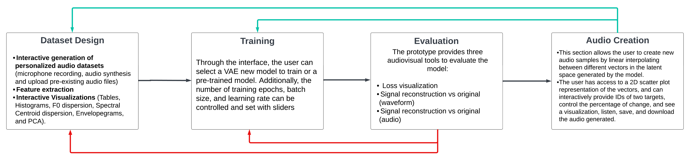

Exploring the potentials of interactive Machine Learning for Sound Generation: A preliminary study with sound artists
A preliminary study with sound artists
Gerardo Meza - UNAM
This article introduces ASCIML, an interactive machine learning (IML) prototype that combines IML and generative models for sound synthesis. ASCIML allows users, including undergraduate musicians, to create personalized datasets, train models, and generate audio clips without prior ML knowledge. The prototype includes data visualization tools, parameter controls, and the option to use a pre-trained model. The study aims to evaluate ASCIML's effectiveness, musicians' dataset preferences, the impact of visualizations and pre-trained models, and musicians' sound generation strategies.
THE PROTOTYPE
MUSICIANS AND ASCIML
This study aimed to assess the use of ASCIML as a tool for musicians. Two groups of undergraduate musicians from UNAM, ENES Morelia were recruited: one group of beginners (16 participants) and another group of experienced musicians (11 participants). The participants underwent a training session on machine learning (ML) concepts, datasets, model training, and evaluation. They were then given 2 hours to create a dataset with ≥ 60 audio files using three techniques, train a model from scratch, evaluate its performance, and generate new sounds. They were also asked to use a pre-trained model with the same dataset and repeat the process. The study objectives included assessing musicians' preferences in creating personalized datasets, evaluating the effectiveness of different data visualizations, investigating the impact of a pre-trained model, understanding musicians' strategies in generating new sounds and the influencing factors, and gathering feedback to improve the overall experience of using IML for sound synthesis.


PRELIMINARY RESULTS
.png)
 19.57.35.png)
The study found that timbre was the most utilized criteria to generate their datasets. Also, that the participants fa- vored using microphone recording and synthesis to create their dataset, with 76% rating these methods as efficient or very efficient (Figure 4). The Envelopegram visualization and tables were also found to be particularly useful, with the majority of participants stating that they provided rel- evant information. In contrast, histograms were voted as the least useful of all the visualizations provided.
The participants of the first group suggested integrating more auditory information into the interface. This feature was implemented and tested with the second group. In terms of evaluating the model, over 50% of the participants relied on hearing the audio reconstruction provided by the interface, while 40% relied on the waveforms visualization. Furthermore, almost half of the participants considered that the pretrained model gave better results in reconstructing their data in the given time of the activity. When it came to creating new sounds, a significant pro- portion of participants were able to obtain musically inter- esting sounds within a short timeframe, specifically, 37% of participants reported obtaining these sounds in under 20 minutes (Figure 5). An experimental approach to sound synthesis was common between the participants (44.4%), while over 30% focused on timbre contrast and affinities (Figure 5). Lastly, during both studies it was also observed that nearly all composers spent most of the activity creat- ing the datasets, small collections of sounds at the time, followed by the exploration of their interpolation results.
FINDINGS
- Participants preferred creating datasets using microphone recording and synthesis.
- The Envelopegram visualization was effective in understanding the dataset.
- Auditory information in the interface was beneficial for users
- Participants relied on audio reconstruction and waveform visualization during model evaluation.
- Pre-trained models were considered to produce better results in reconstructing data.
- Participants approached sound generation experimentally, considering timbral contrast and similarities.
- Participants successfully generated musically compelling sounds despite reconstruction noise.
- IML shows potential as a valuable tool for sound synthesis, but further research is needed to enhance the user experience.
CONCLUSIONS AND FUTURE WORK
This article highlights the potential of ASCIML as a valuable tool for musicians in creating personalized datasets and generating new sounds. The study found that most participants preferred using microphone recording and synthesis techniques to design their datasets, with a focus on timbre. The data visualizations provided, particularly the Envelopgram, were effective in understanding sound collections. The use of a pre-trained model was found to accelerate the audio reconstruction process. Overall, the study demonstrated that musicians were engaged and benefited from the activity as a valuable learning experience. However, there are areas for improvement, including expanding the model's audio-length reconstruction capabilities, providing more auditory information and interactive visualization within the interface, and conducting a longer study involving participants from diverse backgrounds incorporating the generated sounds into musical contextsREFERENCES
- S. Amershi, M. Cakmak, W. B. Knox, and T. Kulesza. Power to the people: The role of humans in interactive machine learning. Ai Magazine, 35(4):105–120, 2014.
- J. A. Fails and D. R. Olsen Jr. Interactive machine learning. In Proceedings of the 8th international conference on Intelligent user interfaces, pages 39–45, 2003.
- R. Fiebrink, P. R. Cook, and D. Trueman. Human model evaluation in interactive supervised learning. In Proceedings of the SIGCHI conference on human factors in computing systems, pages 147–156, 2011.